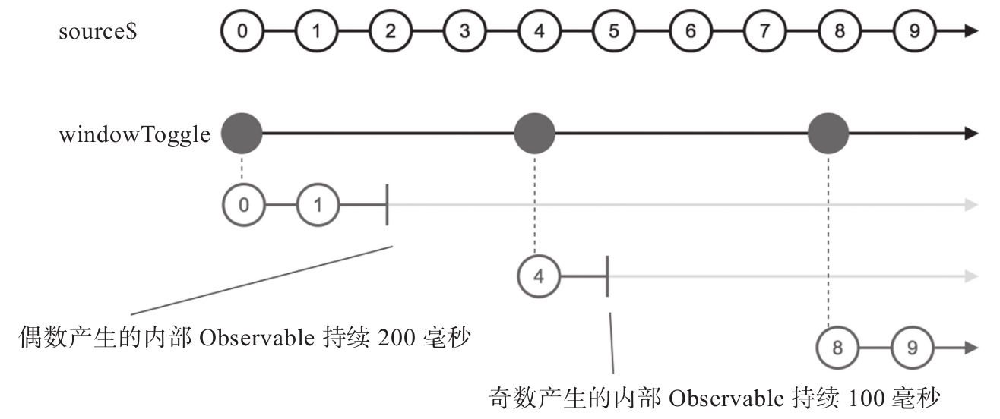

toggle的含义就是两个状态之间的切换，windowToggle和bufferToggle也是利用Observable来控制缓冲窗口的开和关。相比于windowWhen和bufferWhen靠一个无参数closingSelector函数来控制开关，windowToggle和bufferToggle提供更加简单的功能。
windowToggle和bufferToggle需要两个参数，第一个参数opening$是一个Observable对象，每当opening$产生一个数据，代表一个缓冲窗口的开始，同时，第二个参数closingSelector也会被调用，用来获得缓冲窗口结束的通知。
windowToggle和bufferToggle的closingSelector函数参数是有参数的，参数就是openings$产生的数据，如此一来，由opening$控制每个缓冲窗口的开始时间，由closingSelector来控制每个缓冲窗口的结束时间，就可以完全控制产生高阶Observable对象的节奏。
使用windowToggle的示例代码如下：
const source$ = Observable.timer(0, 100);
const openings$ = Observable.timer(0, 400);
const closingSelector = value => {
return value % 2 === 0 ? Observable.timer(200) : Observable.timer(100);
};
const result$ = source$.windowToggle(openings$, closingSelector);
其中，opening$每400毫秒产生一个数据，所以每400毫秒就会有一个缓冲区间开始。每当opening$产生一个数据时，closingSelector就会被调用返回控制对应缓冲区间结束的Observable对象，如果参数为偶数，就会延时200毫秒产生一个数据，否则就延时100毫秒产生一个数据。最终的弹珠图如图8-8所示。

图8-8 windowToggle的弹珠图
如果closingSelector产生的Observable对象产生数据的延时超过了opening$产生数据的延迟，windowToggle产生的内部Observable之间有可能产生数据重叠。bufferToggle功能和windowToggle一样，区别只是产生的是数组数据而已，无需多言。